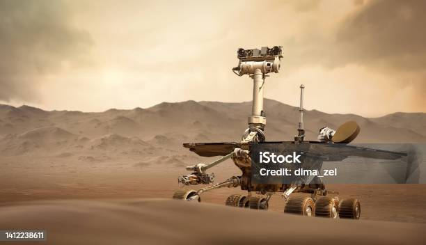

Hello! Welcome to the World of Space Exploration
Space exploration is the systematic investigation and study of outer space using various technologies and methods. It involves sending spacecraft, satellites, and probes to explore celestial bodies, gather scientific data, and expand our understanding of the universe. Space exploration encompasses both manned and unmanned missions, contributing to advancements in technology, scientific knowledge, and the potential for human expansion beyond Earth.
The Vast Frontier of Space Exploration
Space exploration has always captured the human imagination, representing the ultimate frontier for discovery. As we venture beyond our planet, we embark on a journey into the vast unknown, seeking to unlock the mysteries of the cosmos. With advancements in technology, space agencies worldwide are pushing the boundaries of what we can achieve, from robotic missions to manned expeditions, fueling our collective curiosity about the wonders of outer space.
Scientific Discoveries Beyond Earth
Space exploration is a playground for scientific discovery. Telescopes, rovers, and space probes allow us to study distant planets, moons, and galaxies, unraveling the secrets of the universe. From the breathtaking landscapes of Mars to the icy moons of Jupiter, each mission provides valuable insights into the formation and evolution of celestial bodies, expanding our understanding of the fundamental forces that govern the cosmos.
Technological Innovations and Challenges
The pursuit of space exploration has driven remarkable technological innovations. From the development of powerful rockets to sophisticated space probes, the challenges of space travel have pushed scientists and engineers to create groundbreaking solutions. However, space exploration also presents formidable obstacles, including the harsh conditions of space, radiation exposure, and the need for sustainable life support systems, making it a continuous journey of innovation and problem-solving.